地政学
キングスタウンは東カリブの小島国家を外へ開く港です。英連邦、OECS、CARICOM、台湾外交、観光航路、気候資金が重なり、首都の会議は港湾、防災、移民、海洋境界、島しょ国の発言力に直結します。海の権益も今の争点です。
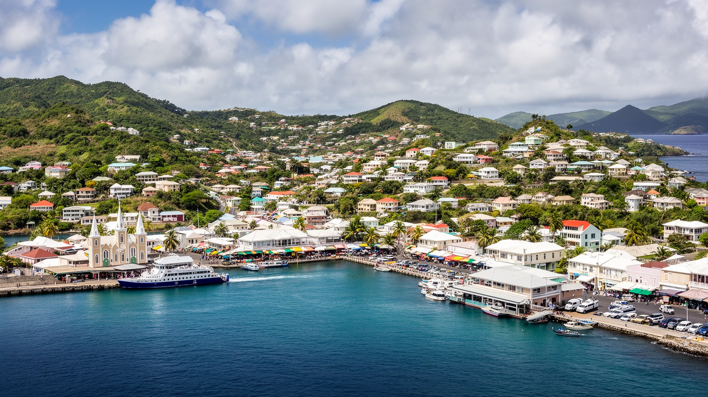
🇻🇨 セントビンセントおよびグレナディーン諸島 / 首都 / World City Atlas
セントビンセント島南西岸の港に、政府、商業、フェリー、教会、植物園、丘陵住宅、カリブ海観光が集まる小島国家の首都です。
都市の骨格
キングスタウンは狭い海岸平野と丘陵に広がり、港、官庁、小売、バスターミナル、フェリー、教会が徒歩圏に重なります。火山島の地形とカリブ海の海上交通が、首都の大きさ以上の役割を作っています。
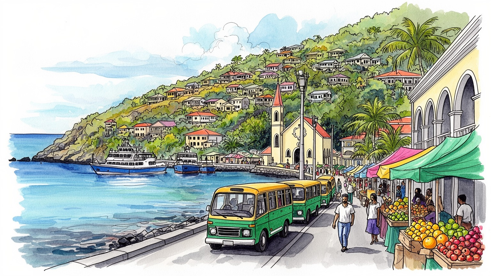
キングスタウンは東カリブの小島国家を外へ開く港です。英連邦、OECS、CARICOM、台湾外交、観光航路、気候資金が重なり、首都の会議は港湾、防災、移民、海洋境界、島しょ国の発言力に直結します。海の権益も今の争点です。
雇用は政府、小売、港湾、建設、観光、教育、農産物流通に集中します。バナナ後の農業、島外移民、クルーズ、フェリー、送金が家計を支え、若者には技能訓練と安定職の不足が重く響きます。季節雇用の波も響きます。
教会、ラスタファリ、Vincy Mas、カリプソ、スチールパン、クリケット、ラジオの声が街中を満たします。アフリカ系住民の歴史、先住カリナゴの記憶、植民地建築、家族行事が首都文化を重ねます。港の夜の音楽も日常です。
住民は坂道、バス、港の混雑、雨、物価、学校、親族の助け合いを調整して暮らします。旅行者は植物園、教会、砦、市場、フェリーから、首都とグレナディーン諸島を結ぶ短い旅を始めます。海風の夕方も魅力です。
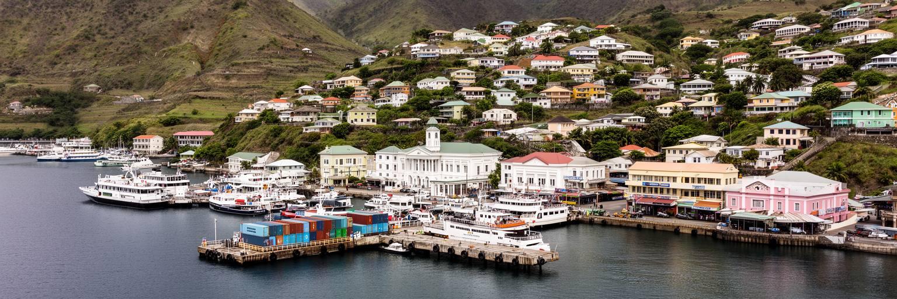
キングスタウンは、セントビンセント島南西岸の湾に抱かれた小さな首都です。海岸の平地は狭く、港、商店街、官庁、教会、バスの発着点、倉庫、フェリー乗り場が近い距離に集まります。背後の丘には住宅が上がり、坂道からはカリブ海と船の動きが見えます。この地形は都市をコンパクトにしますが、交通の集中、駐車、排水、津波や高潮への備えも難しくします。港は輸入品、食料、建材、燃料、郵便、旅客、観光客を受け入れ、島国の生活を外部世界につなぐ場所です。朝は塩気、ディーゼルの匂い、魚箱の水音、市場へ急ぐ足音、ミニバスの呼び声が重なり、岸壁の近さが生活の音になります。大型都市のような広い経済圏はなくても、船が遅れれば店の棚や工事現場に影響が出ます。小島国家の首都では、港湾の効率と日常の安心がほとんど同じ意味を持ちます。キングスタウンを歩くと、海を眺める観光の軽さと、輸入に頼る生活の重さが同時に見えてきます。湾の美しさは都市の象徴ですが、岸壁、道路、排水路、税関、バスターミナルを維持する地味な仕事がなければ、首都機能はすぐ詰まります。燃料価格、観光需要、船便、保険料が、家計と商売に直接届きます。湾を守ることは都市を守ることです。朝の荷揚げと夕方の散歩が同じ岸辺で交差するため、港は産業施設であり公共空間でもあります。
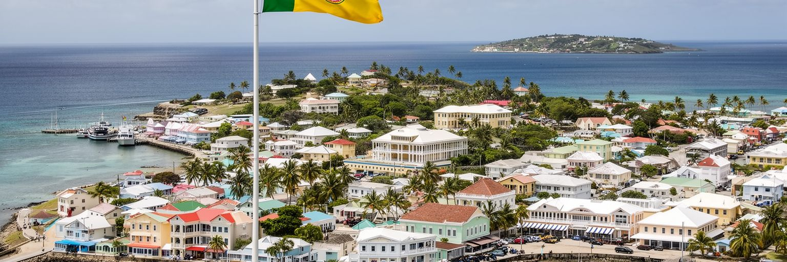
キングスタウンは、人口規模では小さくても、セントビンセントおよびグレナディーン諸島の政治を束ねる場所です。省庁、議会、裁判所、外交窓口、報道、政党活動が集まり、予算、防災、教育、医療、観光、農業、島間交通の方針がここで決まります。国は英連邦、東カリブ諸国機構、カリブ共同体、国連の枠組みで発言し、気候変動、海洋資源、債務、災害復旧、開発援助を交渉します。台湾との外交関係も、カリブ地域の国際政治の一部として注目されます。小国外交では、首都の行政能力がそのまま交渉力になります。十分な専門人材を抱えにくい中で、法律、港湾、気候資金、観光、保健、教育を同時に扱わなければなりません。国内では本島とグレナディーン諸島、都市と農村、観光地と生活地域の配分が政治課題になります。キングスタウンの官庁街は大きくありませんが、そこで作られる政策は、離島の桟橋、農家の出荷、学校の補修、病院の薬、災害時の避難へすぐ影響します。首都政治の質は、壮大な建物よりも、限られた財源を透明に使い、住民の声を島々へ届ける制度に表れます。港の近い政治都市であることは、国境を越える交渉と生活の用事が同じ街路で交わるということです。会議室の決定が船便や道路整備に変わるまでの速さが、小国の信頼を左右します。職員の専門性を育て、記録を公開し、島ごとの声を拾う地道さが外交力にもなります。
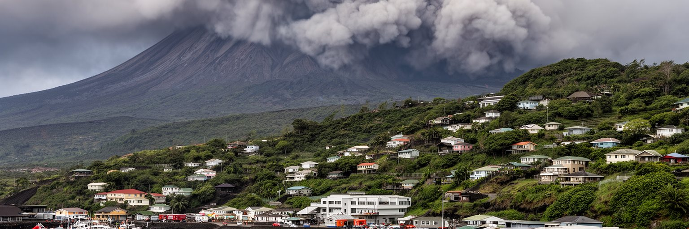
キングスタウンの暮らしは、火山島の自然条件と切り離せません。島の北部にはラ・スフリエール火山があり、噴火、降灰、土砂流、避難、農地被害は国全体の記憶に残っています。首都は島の南西岸にあるため、火山のふもとに直接置かれているわけではありませんが、災害時には避難者の受け入れ、物資の輸入、医療、港湾、行政調整の中心になります。灰が降れば空港や道路、貯水、屋根、学校、商店に影響が及び、農業と観光の回復にも時間がかかります。さらに熱帯低気圧、豪雨、高潮、地すべり、海岸浸食も加わり、防災は単発の非常時対応ではなく、都市運営の中核になります。狭い平地に多くの機能が集まるキングスタウンでは、排水路、避難路、港の復旧力、通信、備蓄、学校や教会の避難所機能が重要になります。住民は災害を遠い脅威としてではなく、家族の準備、屋根の修理、貯水、連絡網、保険、親族の助け合いとして受け止めます。観光客には穏やかな海と緑の島に見えても、首都の安定は火山と気候への継続的な備えに支えられています。自然の美しさを資産にするには、危険を隠さず、情報と訓練と公共投資を積み上げる必要があります。防災は恐怖を広げるためではなく、島で暮らし続ける自信を作る都市文化になります。小さな首都ほど、備えの密度が住民の安心を決めます。学校での訓練、港の代替手順、近所の連絡先まで整うと、災害後の回復は早くなります。
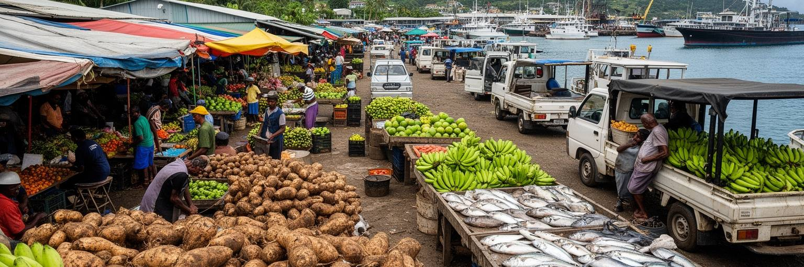
キングスタウンの市場と港は、島の農業と深く結びついています。セントビンセントはかつてバナナ輸出に大きく頼り、国際価格、貿易制度、病害、ハリケーンの影響を受けてきました。現在は根菜、果物、野菜、スパイス、畜産、漁業、加工品、小規模農業が家計と食卓を支え、首都の市場に集まります。山地の農村から運ばれる農産物は、バスや小型トラックで街へ入り、露店、食堂、家庭、ホテルへ届きます。焼き魚、ローストブレッドフルーツ、ペッパーソースの匂いは昼の買い物を動かし、店先の小商いは現金収入をつなぎます。港は輸入品の入口である一方、農産物や加工品を外へ出す可能性も持ちます。しかし小規模農家は、輸送費、気候被害、若者の農業離れ、土地の細分化、信用、冷蔵保管、観光需要の波に左右されます。市場は単なる買い物の場所ではなく、島の斜面、雨、土、労働、港湾経済をつなぐ場所です。観光業が地元食材を使い、学校給食や病院が農家と結び、冷蔵や加工の仕組みが整えば、キングスタウンの食の循環は強くなります。農業は過去の産業ではなく、災害時の食料安全保障、文化、雇用、景観を支える現在の基盤です。港の近い市場で何が売られているかを見ると、島が外から買うものと、自分たちで育て続けるもののバランスが分かります。市場の屋根、排水、衛生、保管を整えることも、農家を守る都市政策になります。
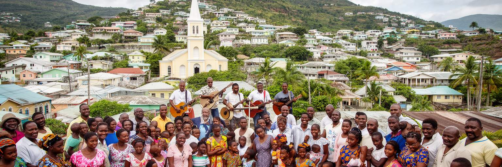
キングスタウンの社会生活では、教会と家族のネットワークが大きな役割を持ちます。英国国教会、メソジスト、ペンテコステ派、セブンスデー・アドベンチスト、カトリック、バプテストなど多様なキリスト教会があり、ラスタファリの存在もカリブの精神文化を示します。礼拝は信仰の時間であるだけでなく、音楽、服装、寄付、子どもの教育、葬儀、結婚、困窮者支援、地域情報の交換を含みます。日曜朝の鐘、ゴスペル、ラジオ説教、SNSで回る訃報や祝祭の案内も、家族の予定を動かします。小さな首都では、誰かの親戚、同級生、教会仲間、職場の知人がすぐつながり、良くも悪くも強い社会的な視線が働きます。困った時には親族や教会が支えになりますが、若者、単身者、移民帰り、失業者、性的少数者、家庭内暴力の被害者には、その近さが重荷になる場合もあります。宗教と家族を美しい共同体としてだけ描くと、生活の緊張を見落とします。キングスタウンの公共政策は、教会や地域団体の支援力を生かしながら、医療、教育、相談、福祉を権利として整える必要があります。Vincy Masの踊り、合唱、葬儀の行列、日曜の服装、親族の食卓には、島の歴史と尊厳が残ります。同時に、若者が自分の進路を選び、女性が安全に働き、子どもが暴力から守られる制度も欠かせません。小さな街の安心は、近所の助け合いと制度の信頼が重なる時に生まれます。
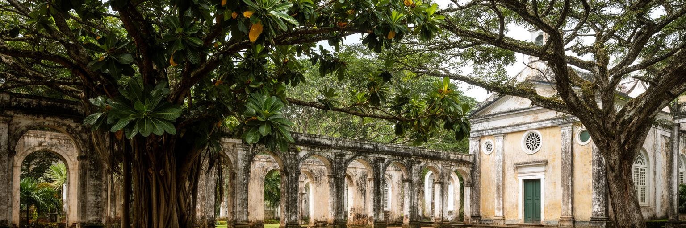
キングスタウンには、植民地期の建築、教会、砦、石造のアーチ、植物園が残り、カリブ海の歴史を短い距離で読むことができます。セントビンセント植物園は十八世紀に起源を持つ西半球でも古い植物園の一つとして知られ、パンノキの移植や帝国の植物利用の記憶とも結びつきます。美しい庭園として楽しめる一方、そこには奴隷制、プランテーション、植民地行政、科学と支配の関係も重なっています。街の教会や石造建築は、ヨーロッパ勢力が島を支配した歴史を示し、先住カリナゴ、アフリカ系住民、ガリフナにつながる抵抗と強制移動の記憶を背景に持ちます。観光では写真映えする遺産が前面に出ますが、キングスタウンの歴史を丁寧に読むには、美しい建物と不平等な制度を切り離さない視点が必要です。保存は古い石や木を残すだけではありません。解説、学校教育、地元ガイド、修復技能、公共空間としての利用を通じて、住民が自分たちの複雑な歴史を語れるようにすることです。植物園の木陰、教会の鐘、砦から見える港は、観光資源であると同時に、支配、抵抗、移動、適応の記憶を宿しています。小さな首都の遺産は、世界史の端ではなく、大西洋世界の中心的な問いを含んでいます。庭園を歩く穏やかな時間にも、島が外部の力とどう向き合ってきたかが見えます。古い場所を使い続けることで、歴史は記念碑ではなく市民の学びになります。
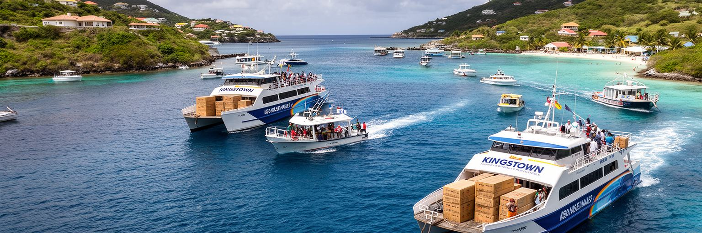
セントビンセントおよびグレナディーン諸島は、一つの島だけで成り立つ国ではありません。ベキア、マスティク、カヌアン、ユニオン島などの島々と本島を結ぶフェリー、貨物船、航空路が、行政、学校、病院、商売、観光、家族訪問を支えます。キングスタウンの港は、その島間交通の実務的な中心です。朝の船には通勤者、学生、観光客、商人、農産物、修理部品、生活用品が乗り、離島の時間は首都の船便に影響されます。フェリーの遅れや欠航は、病院予約、学校行事、ホテルの予約、食料の仕入れに直結します。グレナディーン諸島は高級リゾートやヨット観光で知られますが、そこに暮らす住民には水、医療、教育、住宅、廃棄物、雇用の課題があります。首都から見る島々を観光地としてだけ扱うと、国家内部の不均衡を見落とします。キングスタウンの役割は、離島の魅力を売ることだけでなく、公共サービスと移動の公平を保つことです。港湾施設、チケット制度、安全検査、桟橋、海上保安、天候情報が整えば、島国の一体感は強くなります。フェリー乗り場は、観光ポスターにない国の姿を見せます。小さな荷物、家族の見送り、学校の制服、魚箱、建材が同じ船に積まれる時、島々の生活が首都へ結び直されます。海は隔たりであり、同時に道路でもあります。その道路を誰もが使える状態にすることが、首都の責任です。
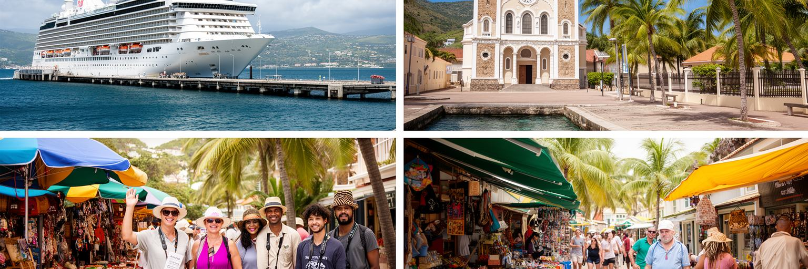
キングスタウンの観光は、クルーズ船、ヨット、フェリー、島内ツアー、グレナディーン諸島への移動が重なって成り立ちます。旅行者は港から歩いて教会、植物園、市場、砦、海辺の眺めに向かい、短時間で首都の輪郭をつかみます。郊外へ出れば滝、黒砂の海岸、火山、映画で知られる海辺、農村景観もあります。観光はタクシー、ガイド、土産物、飲食、宿泊、船、警備、清掃に仕事を作りますが、季節性が強く、クルーズ客が街に落とす支出は限られることもあります。大型船が来る日は中心部が賑わい、来ない日は商店の売上が落ちるなら、観光への依存は不安定です。観光を地域の力にするには、地元ガイドの解説、歴史の見せ方、歩道、案内、公共トイレ、治安、日陰、バリアフリー、港と市場の動線を整える必要があります。美しい景観だけでなく、植民地史、先住民の記憶、火山、防災、農業、宗教、夜のカリプソや路上の食をつなげて伝えられれば、滞在は深くなります。キングスタウンは派手なリゾートの中心ではありませんが、島国の現実に触れられる玄関です。観光客が一枚の写真で通り過ぎる街を、住民の商いと誇りを支える場所へ変えることが重要です。港の賑わいを短い消費で終わらせず、歩いて学べる都市体験へ広げられるかが、首都観光の質を決めます。客船の予定に左右される商売ほど、地域客や滞在型旅行との組み合わせが必要です。
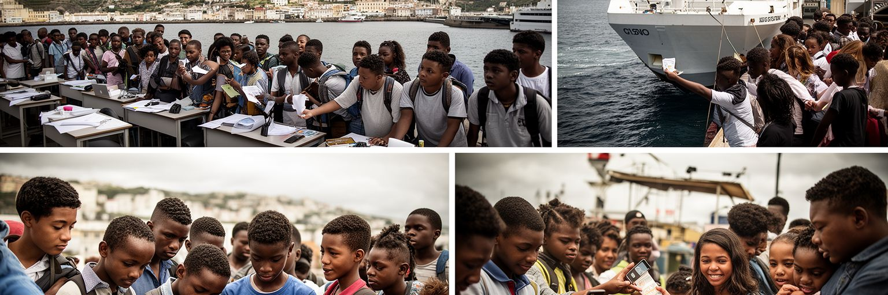
キングスタウンの未来を考える時、若者と移民は避けて通れません。小さな島国では、進学、専門職、医療、観光、船舶、IT、看護、教育、建設などの機会が限られ、英米圏や近隣カリブ諸国へ移る人も多くなります。島外で働く家族からの送金は住宅、学費、起業、日常消費を支えますが、人材流出は行政、医療、教育、民間企業の力を弱めることもあります。首都には学校、職業訓練、役所、商店、港が集まり、若者が最初に都市的な仕事を探す場所になります。しかし安定した雇用が少なく、観光や小売の賃金が低ければ、将来像は狭まります。放課後のクリケット、サッカー、教会の合唱、カーニバル準備、SNSで広がる音楽は、子どもと若者が自分を表す場です。失業、犯罪、薬物、早い妊娠、家庭の負担は、個人の問題ではなく、都市の機会設計と関係します。音楽、スポーツ、教会、オンライン文化を仕事や学びへつなぐ制度も必要です。キングスタウンが若者にとって戻りたい首都になるには、技能訓練、起業支援、公共交通、住宅、文化施設、デジタル環境が重要になります。移民を失敗と見るだけでなく、海外で得た経験を帰国後に生かせる仕組みを作れば、小さな国の弱点はネットワークの強みに変わります。港と空港から出ていく人を、いつか戻って貢献できる市民として扱うことが、首都の長期的な力になります。若者が発言できる場を増やすことも、都市の閉塞感を和らげます。
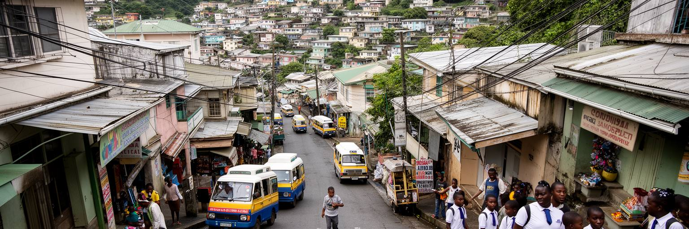
キングスタウンの日常は、狭い中心部と急な丘陵に沿って組み立てられます。商店街、学校、役所、教会、市場、港、バスの発着点が近くにあるため、用事をまとめて済ませやすい一方、坂道や混雑は高齢者、子ども、障害のある人、荷物を持つ人に負担になります。ミニバスや乗合交通は生活を支えますが、道路の余裕が少ないため、渋滞、騒音、排気、歩道の狭さが暮らしを圧迫します。丘の住宅地では眺めが良く、近所のつながりも強いですが、大雨時の排水、斜面崩れ、道路補修、上下水道、ゴミ収集、消防アクセスが重い論点になります。中心部の商いは港と官庁の動きに合わせて変わり、昼間の賑わいと夜の静けさの差も大きくなります。歩道脇では携帯チャージ、果物、弁当、雑貨の小商いが続き、ラジオのニュースやSNSの噂が買い物の会話に混ざります。住民は物価、輸入品の値段、学校費、電気代、親族への支援、教会行事を調整しながら暮らします。キングスタウンの暮らしを理解するには、港の風景だけでなく、坂道を上る買い物袋、通学する子ども、店先の会話、雨水の流れを見る必要があります。都市の快適さは、歩道、日陰、排水、街灯、バス停のような細部に現れます。観光客が短時間で通り過ぎる道も、住民には毎日の負担と支えが重なる生活空間です。坂の上と港辺で暮らしの条件が違うため、公共サービスは地形に合わせて届く必要があります。
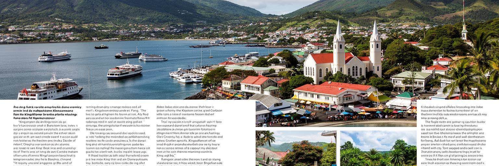
キングスタウンは、世界の巨大都市と比べれば非常に小さな首都です。それでも、現代の島しょ都市を読むための論点が凝縮されています。港は輸入、観光、フェリー、行政を支え、丘陵の住宅地は土地の限界と景観を示し、官庁街は気候資金、外交、災害復旧、教育、医療を扱います。植物園と教会は植民地史と信仰を語り、市場は農村と港を結び、フェリー乗り場はグレナディーン諸島との一体感を作ります。火山、豪雨、高潮、海岸浸食は自然の美しさの裏側にある現実で、観光の収入は雇用を生みながら不安定さも伴います。若者の移民、送金、技能不足、物価、住宅、公共交通は、国の規模が小さいからこそ家庭へ直接届きます。キングスタウンを丁寧に見るには、カリブの明るい港町という印象だけでは足りません。湾の眺め、坂道の負担、教会の支え、クルーズの日の商い、雨の排水、離島へ向かう船、火山の記憶を同じ都市の要素として読む必要があります。小さな首都の強みは、政策と生活の距離が近いことです。弱点は、その近さが財源不足や災害の衝撃をすぐ露出させることです。だからこそ、キングスタウンの未来は、港を効率化し、歴史を語り、若者を育て、島々を公平につなぎ、自然リスクを隠さず備えることにかかっています。世界都市性は規模だけでなく、世界の問題をどれだけ濃く受け止めているかにも表れます。